used (Mb) gc trigger (Mb) max used (Mb)
Ncells 577364 30.9 1319401 70.5 660420 35.3
Vcells 1057818 8.1 8388608 64.0 1770142 13.6Scale_Area_Curves
BEAST: Scale-Area Curves
This script does some basic assessment of the atlas data (species richness, effort) across temporal and spatial scales
1. Reading the necessary libraries
2. Setting path variables
3. Reading the data
# Species data
presence_data <- readRDS(data_path)
## sort the cell groupings ascending
presence_data <- presence_data %>%
mutate(cell_grouping = factor(cell_grouping, levels = desired_levels))
## add column for time period (tp)
start_times <- sort(unique(presence_data$start_year))
end_times <- sort(unique(presence_data$end_year))
time_periods <- data.frame(start_year = start_times,
end_year = end_times,
tp = 1:length(end_times))
presence_data <- merge(presence_data, time_periods, by=c("start_year", "end_year"), all.x=T)
# grid data
grid_list <- sapply(layers, function(i) {
st_read(grid_path, paste(i), quiet = TRUE)
}, simplify = FALSE)
names(grid_list[[1]]) [1] "cell_grouping" "cell_label" "area1"
[4] "area2" "area3" "area1c"
[7] "area2c" "area3c" "cell_perimeter_km2"
[10] "cell_max_length" "cell_ns_leng" "cell_ew_leng"
[13] "cell_long" "cell_lat" "geom" 4.1 Exploring the data: Sampling effort & Species Richness
- Sampling effort
- Species richness
- SR ~ effort
# Convert presence data (original resolution) into spatial object
presence_data_sf <- presence_data %>%
filter(cell_grouping == "cell1grid") %>%
filter(!is.na(cell_long) & !is.na(cell_lat)) %>% # filter records without coordinates
st_as_sf(coords=c('cell_long', 'cell_lat'),
crs=st_crs(grid_list[[1]]))
# Add effort and species richness to grid object
grid_data_original <- merge(grid_list[[1]], presence_data) %>%
group_by(cell_label, tp, effort) %>% # the name of the column that has the index
mutate(SR=n_distinct(verbatim_name, na.rm = TRUE)) %>% # calculates the number of different 'species' in the polygon
unique()
# Calculate species richness per cell, scale and sampling period:
temp_df <- presence_data %>% filter_all(any_vars(!is.na(.))) %>%
group_by(dataset, cell_grouping, cell_label, start_year) %>%
summarise(
SR_cell = n()) %>%
# Calculate range, mean (+ sd) of SR and mean Difference (+ sd) in SR between years:
ungroup() %>%
group_by(dataset, cell_grouping, start_year) %>%
mutate (minSR_cell = min(SR_cell),
maxSR_cell = max(SR_cell),
meanSR_cell = mean(SR_cell),
sdSR_cell = sd(SR_cell)) %>%
mutate(Diff_SR_meanSR = SR_cell - meanSR_cell) %>%
mutate(Diff_SR_meanSR = round(Diff_SR_meanSR, 2),
sdSR_cell = round(sdSR_cell, 2)) %>%
ungroup() `summarise()` has grouped output by 'dataset', 'cell_grouping', 'cell_label'.
You can override using the `.groups` argument.# How does species richness scale across sampling periods? ====================================== #
min <- min(temp_df$meanSR_cell)
max <- max(temp_df$meanSR_cell)+10
temp_df %>%
ggplot(aes(
y = meanSR_cell,
x = cell_grouping,
col = as.factor(start_year))) +
geom_point(alpha = 0.6) +
geom_line(aes(group = start_year))+
ylab("mean Species Richness") +
xlab("Scale") +
theme_light() +
labs(color = "Start Year of Sampling Period",
title = "Mean Species Richness across Scales",
subtitle = "Number above boxes = mean species richness") +
scale_y_continuous(breaks = seq(0, max, by = 50), limits = c(0, max)) +
geom_text(aes(label = round(meanSR_cell, 2), y = meanSR_cell),
vjust = -3, size = 2, position = position_dodge(width = 1)) + # Adjust position to dodge labels
scale_color_viridis(discrete = TRUE, alpha = 0.9)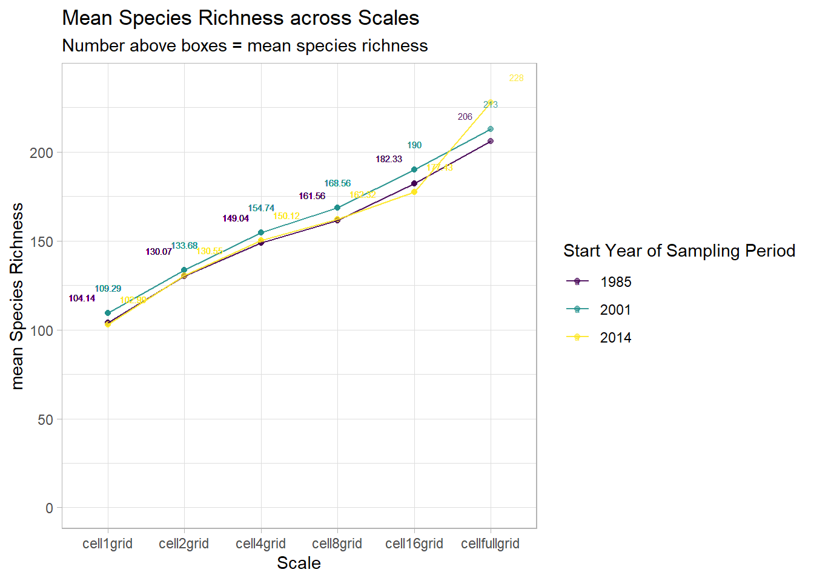
ggsave(plot = last_plot(), filename = paste0(out_path, "Figs/SpeciesRichness_PointLine.pdf"))Saving 7 x 5 in image# ================================= Some Plots ========================================= #
# Species Richness map:
srm <- ggplot(data = grid_data_original)+
geom_sf(aes(fill = SR))+
theme_void()+
facet_grid(factor(tp)~.)+
scale_fill_viridis()
ggsave(filename = "SR_map.pdf",
path = paste0(out_path, "Figs/"),
device = cairo_pdf,
width = 210,
height = 297,
units = "mm")
# Effort map:
em <- ggplot(data = grid_data_original)+
geom_sf(aes(fill = effort))+
theme_void()+
facet_grid(factor(tp)~.)+
scale_fill_viridis()
ggsave(filename = "Effort_map.pdf",
path = paste0(out_path, "Figs/"),
device = cairo_pdf,
width = 210,
height = 297,
units = "mm")
# Panel plot of both:
sr_em <- grid.arrange(srm, em, ncol=2) 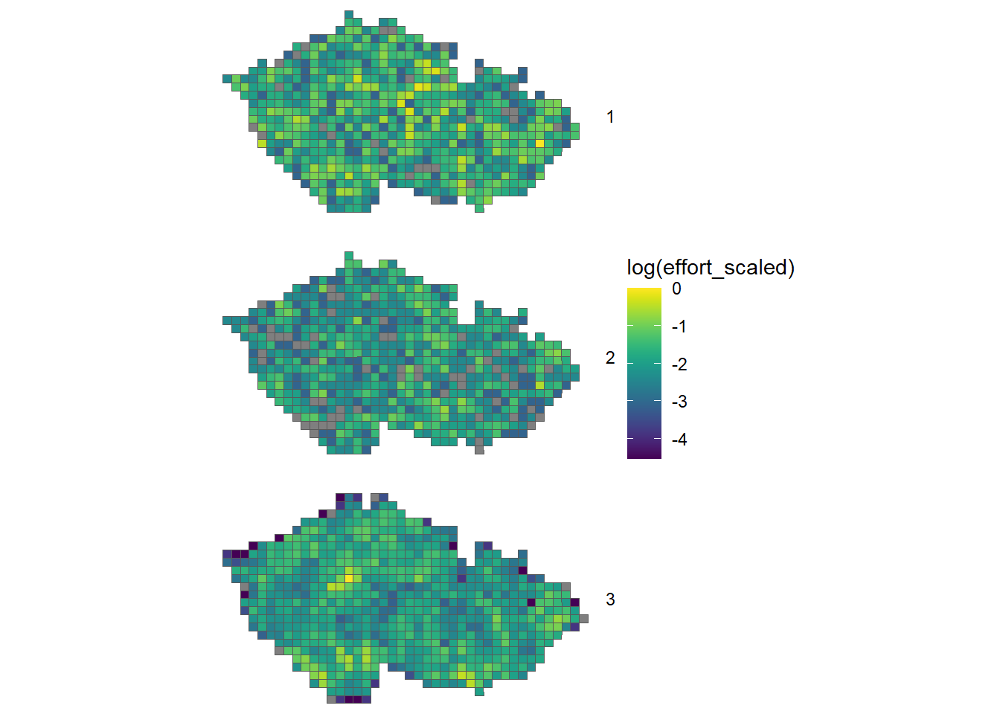
ggsave(plot = sr_em,
filename = "SR_Effort_maps_panel.pdf",
path = paste0(out_path, "Figs/"),
device = cairo_pdf,
width = 297,
height = 210,
units = "mm") # save as A4 landscape pdf
# Sampling effort ~ time boxplots
means <- aggregate(effort ~ tp, grid_data_original, mean)
grid_data_original %>%
ggplot(aes(y = effort, x= factor(tp)))+
geom_boxplot(fill = "lightgrey", outlier.color = "red")+
theme_light()+
# Add mean
stat_summary(fun=mean, colour="darkred", geom="point", shape=18, size=3, show.legend=FALSE) +
geom_text(data = means, aes(label = round(effort,2), y = 0))+
xlab("Time Periods") +
ylab("Sampling effort (N cards)")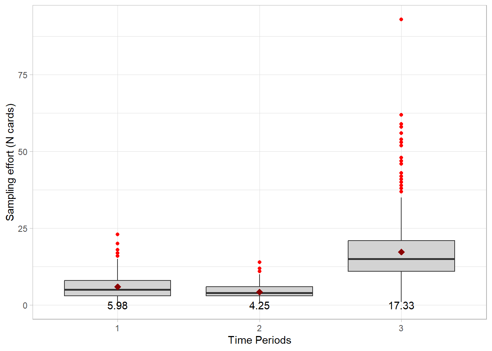
ggsave(filename = "Effort_time_boxplot.pdf",
path = paste0(out_path, "Figs/"),
width = 8,
height = 6)
# Species Richness ~ Effort scatter plot
ggplot(data = grid_data_original, aes(x = effort, y = SR, col = factor(tp)))+
geom_point()+
geom_smooth(method='lm')+
theme_light()+
scale_color_viridis(discrete = T)`geom_smooth()` using formula = 'y ~ x'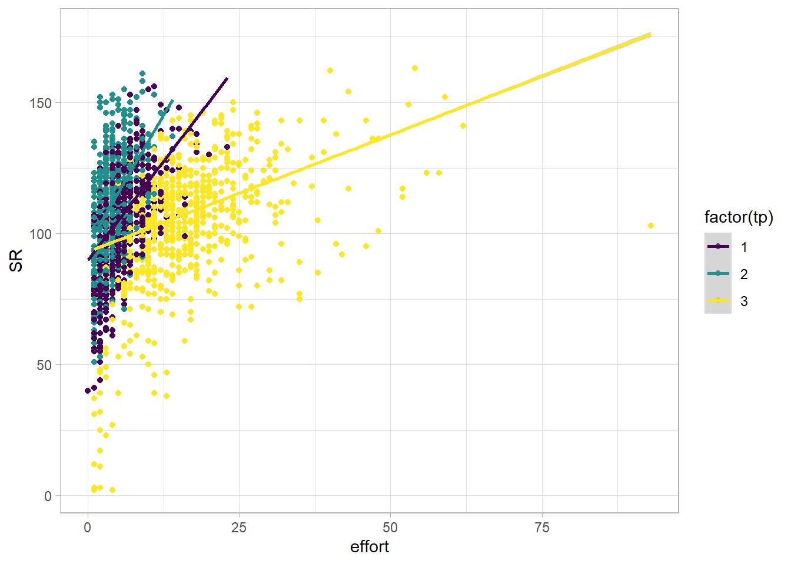
ggsave(filename = "SR_effort_plot.pdf",
path = paste0(out_path, "Figs/"),
width = 8,
height = 6)`geom_smooth()` using formula = 'y ~ x'# ////////////// Outlier removal //////////////// #
# Effort Map (without outliers)
em2 <- grid_data_original %>%
mutate(effort = case_when(effort > 30 ~ 30,
effort < 30 ~ effort)) %>%
ggplot()+
geom_sf(aes(fill = effort))+
theme_void()+
facet_grid(factor(tp)~.)+
scale_fill_viridis()
ggsave(filename = "Effort_map_outliers_removed.pdf",
path = paste0(out_path, "Figs/"),
device = cairo_pdf,
width = 210,
height = 297,
units = "mm")
# Panel plot of both:
sr_em2 <- grid.arrange(srm, em2, ncol=2) 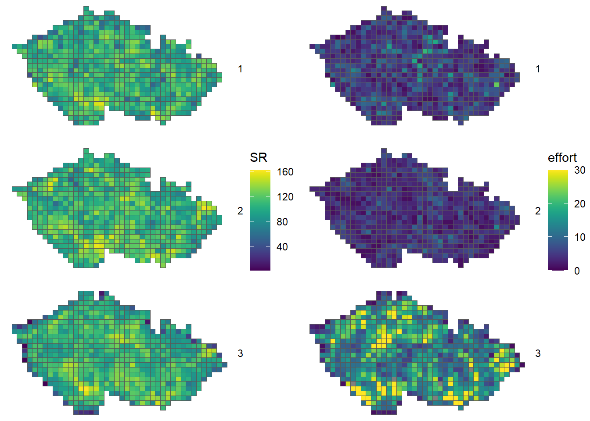
ggsave(plot = sr_em2,
filename = "SR_Effort_maps_panel_outliers_removed.pdf",
path = paste0(out_path, "Figs/"),
device = cairo_pdf,
width = 297,
height = 210,
units = "mm") # save as A4 landscape pdf
# Map: scale effort by time periods (between 0 and 1 for comparative reasons between groups)
grid_data_original %>% group_by(tp) %>%
mutate(effort_scaled = scales::rescale(effort, c(0,1))) %>%
ggplot()+
geom_sf(aes(fill = effort_scaled))+
theme_void()+
facet_grid(factor(tp)~.)+
scale_fill_viridis() 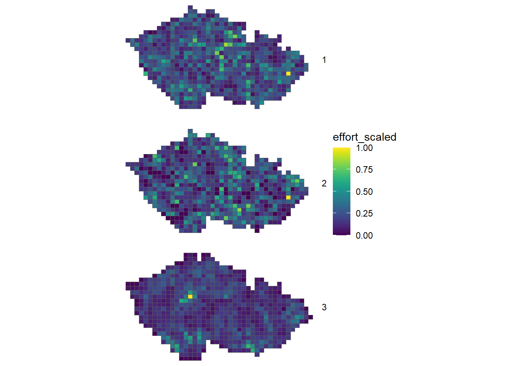
ggsave(filename = "Effort_map_scaled.pdf",
path = paste0(out_path, "Figs/"),
device = cairo_pdf,
width = 210,
height = 297,
units = "mm")
# How does sampling effort scale? ============================================================= #
presence_data %>% ungroup() %>%
group_by(start_year, cell_grouping) %>%
select(effort) %>%
get_summary_stats(type = "mean_sd")Adding missing grouping variables: `start_year`, `cell_grouping`# A tibble: 18 × 6
start_year cell_grouping variable n mean sd
<dbl> <fct> <fct> <dbl> <dbl> <dbl>
1 1985 cell1grid effort 65400 5.98 3.44
2 1985 cell2grid effort 22892 20.9 9.48
3 1985 cell4grid effort 7452 74.3 33.3
4 1985 cell8grid effort 2908 213. 141.
5 1985 cell16grid effort 1094 608. 273.
6 1985 cellfullgrid effort 206 3526 0
7 2001 cell1grid effort 68632 4.25 2.24
8 2001 cell2grid effort 23528 15.1 6.55
9 2001 cell4grid effort 7737 53.8 22.8
10 2001 cell8grid effort 3034 154. 99.0
11 2001 cell16grid effort 1140 439. 196.
12 2001 cellfullgrid effort 213 2554 0
13 2014 cell1grid effort 69106 17.3 9.82
14 2014 cell2grid effort 23761 63.5 30.5
15 2014 cell4grid effort 7806 228. 105.
16 2014 cell8grid effort 3084 667. 433.
17 2014 cell16grid effort 1242 1798. 825.
18 2014 cellfullgrid effort 228 10918 0 presence_data %>%
ungroup() %>%
select(start_year, cell_grouping, effort) %>%
unique() %>%
group_by(start_year, cell_grouping) %>%
summarise(n= n(),
min_effort = min(effort),
mean_effort = mean(effort),
sd_effort = sd(effort),
max_effort = max(effort))`summarise()` has grouped output by 'start_year'. You can override using the
`.groups` argument.# A tibble: 18 × 7
# Groups: start_year [3]
start_year cell_grouping n min_effort mean_effort sd_effort max_effort
<dbl> <fct> <int> <dbl> <dbl> <dbl> <dbl>
1 1985 cell1grid 21 0 10.2 6.55 23
2 1985 cell2grid 43 2 23.3 13.0 48
3 1985 cell4grid 40 2 67.4 35.8 120
4 1985 cell8grid 18 6 196. 149. 411
5 1985 cell16grid 6 91 588. 306. 882
6 1985 cellfullgrid 1 3526 3526 NA 3526
7 2001 cell1grid 13 1 7.08 4.03 14
8 2001 cell2grid 31 1 16.2 9.38 34
9 2001 cell4grid 36 1 52.2 26.3 97
10 2001 cell8grid 18 1 142. 104. 289
11 2001 cell16grid 6 100 426. 219. 712
12 2001 cellfullgrid 1 2554 2554 NA 2554
13 2014 cell1grid 53 1 29.0 19.1 93
14 2014 cell2grid 91 2 65.9 39.1 188
15 2014 cell4grid 45 2 206. 122. 481
16 2014 cell8grid 19 1 575. 465. 1224
17 2014 cell16grid 7 1 1560. 1043. 2565
18 2014 cellfullgrid 1 10918 10918 NA 10918presence_data %>%
ungroup() %>%
select(start_year, cell_grouping, effort) %>%
filter(cell_grouping != "cellfullgrid") %>%
unique() %>%
group_by(start_year, cell_grouping) %>%
mutate(mean_effort = mean(effort)) %>%
ggplot(aes(y = effort, x = cell_grouping, fill = as.factor(start_year))) +
geom_boxplot(alpha = 0.6) +
ylab("Sampling Effort (N Collectors)") +
xlab("Scale") +
theme_light() +
scale_fill_viridis(discrete = TRUE, alpha = 0.7) +
labs(fill = "Start Year of Sampling Period",
title = "Scaling of Sampling Effort across Sampling Periods",
subtitle = "Number above boxes = mean sampling effort") +
scale_y_continuous(breaks = seq(0, max(presence_data$effort), by = 100)) +
geom_text(aes(label = round(mean_effort, 2), y = mean_effort),
vjust = -15, size = 2, position = position_dodge(width = 0.75)) # Adjust position to dodge labelsggsave(plot = last_plot(), filename = paste0(out_path, "Figs/SamplingEffort_boxplot.pdf"), width = 8, height = 6)4.2 Quality checks
# both unbiased
results <- sparta::dataDiagnostics(taxa = presence_data$verbatim_name,
site = presence_data$cell_label,
time_period = presence_data$tp,
progress_bar = FALSE)Warning in errorChecks(taxa = taxa, site = site, time_period = time_period):
71777 out of 309463 observations will be removed as duplicates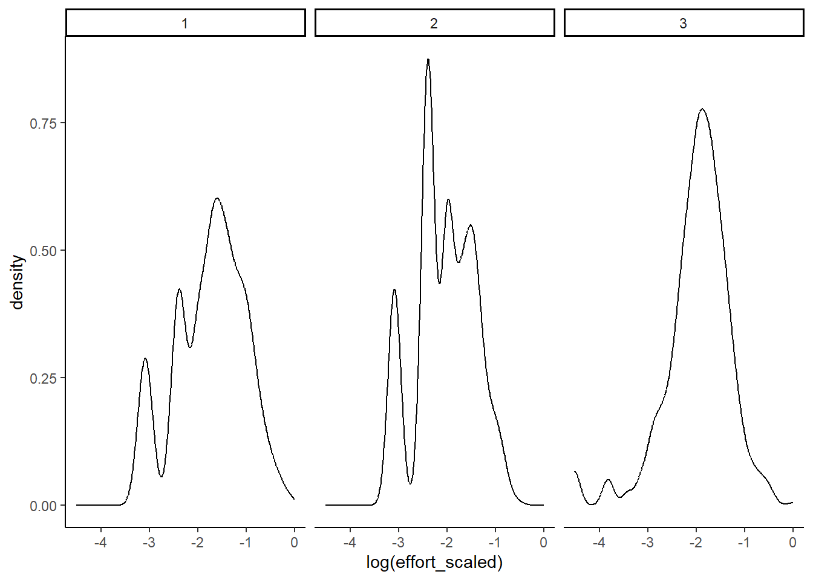
## Linear model outputs ##
There is no detectable change in the number of records over time:
Estimate Std. Error t value Pr(>|t|)
(Intercept) 97879.33 2113.413 46.313400 0.01374377
time_period 2637.50 978.320 2.695948 0.22612421
There is no detectable change in list lengths over time:
Estimate Std. Error z value Pr(>|z|)
(Intercept) 4.7913501020 0.005441331 880.547507 0.0000000
time_period -0.0004810072 0.002504515 -0.192056 0.8476983# Telfer:
telfer_results <- sparta::telfer(taxa = presence_data$verbatim_name,
site = presence_data$cell_label,
time_period = presence_data$tp,
minSite = 2)Warning in errorChecks(taxa = taxa, site = site, time_period = time_period, :
71777 out of 309463 observations will be removed as duplicateshead(telfer_results) taxa Nsite_1.x Nsite_2.x Telfer_1_2 Nsite_1.y Nsite_3.x
1 Accipiter gentilis 624 606 -1.4023416 624 508
2 Accipiter nisus 616 631 0.6178684 616 589
3 Acrocephalus arundinaceus 338 358 -0.2851160 338 392
4 Acrocephalus dumetorum NA NA NA NA NA
5 Acrocephalus melanopogon NA NA NA NA NA
6 Acrocephalus paludicola NA NA NA NA NA
Telfer_1_3 Nsite_2.y Nsite_3.y Telfer_2_3
1 -1.8925836 606 508 -1.906786
2 -0.5529519 631 589 -1.501409
3 0.2094154 358 392 0.612922
4 NA NA NA NA
5 NA NA NA NA
6 NA 16 10 -1.003948ggp1 <- ggplot(data = telfer_results) +
geom_histogram(aes(x = Telfer_1_2), bins = 20, bg = "lightgrey", col = "darkgrey")+
theme_light() +
xlim(-4, 4)+
ylim(0, 85)+
geom_vline(xintercept = mean(telfer_results$Telfer_1_2, na.rm=T), # Add line for mean
col = "red",
lwd = 1) +
annotate("text", # Add text for mean
x = mean(telfer_results$Telfer_1_2, na.rm=T) -2.5,
y = mean(telfer_results$Telfer_1_2, na.rm=T) +80,
label = paste("Mean =", round(mean(telfer_results$Telfer_1_2, na.rm=T),3)),
col = "red",
size = 6)+
geom_vline(xintercept = median(telfer_results$Telfer_1_2, na.rm=T), # Add line for mean
col = "orange",
lwd = 1) +
annotate("text", # Add text for mean
x = mean(telfer_results$Telfer_1_2, na.rm=T) -2.5,
y = mean(telfer_results$Telfer_1_2, na.rm=T) +70,
label = paste("Median =", round(median(telfer_results$Telfer_1_2, na.rm=T),3)),
col = "orange",
size = 6)
ggp2 <- ggplot(data = telfer_results) +
geom_histogram(aes(x = Telfer_2_3), bins = 20, bg = "lightgrey", col = "darkgrey")+
theme_light() +
geom_vline(xintercept = mean(telfer_results$Telfer_2_3, na.rm=T), # Add line for mean
col = "red",
lwd = 1) +
xlim(-4, 4)+
ylim(0, 85)+
annotate("text", # Add text for mean
x = mean(telfer_results$Telfer_2_3, na.rm=T) -2.5,
y = mean(telfer_results$Telfer_2_3, na.rm=T) +80,
label = paste("Mean =", round(mean(telfer_results$Telfer_2_3, na.rm=T),3)),
col = "red",
size = 6)+
geom_vline(xintercept = median(telfer_results$Telfer_1_2, na.rm=T), # Add line for mean
col = "orange",
lwd = 1) +
annotate("text", # Add text for mean
x = mean(telfer_results$Telfer_2_3, na.rm=T) -2.5,
y = mean(telfer_results$Telfer_2_3, na.rm=T) +70,
label = paste("Median =", round(median(telfer_results$Telfer_2_3, na.rm=T),3)),
col = "orange",
size = 6)
ggp3 <- ggplot(data = telfer_results) +
geom_histogram(aes(x = Telfer_1_3), bins = 20, bg = "lightgrey", col = "darkgrey")+
theme_light() +
geom_vline(xintercept = mean(telfer_results$Telfer_1_3, na.rm=T), # Add line for mean
col = "red",
lwd = 1) +
xlim(-4, 4)+
ylim(0, 85)+
annotate("text", # Add text for mean
x = mean(telfer_results$Telfer_1_3, na.rm=T) -2.5,
y = mean(telfer_results$Telfer_1_3, na.rm=T) +80,
label = paste("Mean =", round(mean(telfer_results$Telfer_1_3, na.rm=T),3)),
col = "red",
size = 6)+
geom_vline(xintercept = median(telfer_results$Telfer_1_3, na.rm=T), # Add line for mean
col = "orange",
lwd = 1) +
annotate("text", # Add text for mean
x = mean(telfer_results$Telfer_1_3, na.rm=T) -2.5,
y = mean(telfer_results$Telfer_1_3, na.rm=T) +70,
label = paste("Median =", round(median(telfer_results$Telfer_1_3, na.rm=T),3)),
col = "orange",
size = 6)
ggp_telfer <- grid.arrange(ggp1, ggp2, ggp3)Warning: Removed 38 rows containing non-finite values (`stat_bin()`).Warning: Removed 31 rows containing non-finite values (`stat_bin()`).Warning: Removed 36 rows containing non-finite values (`stat_bin()`).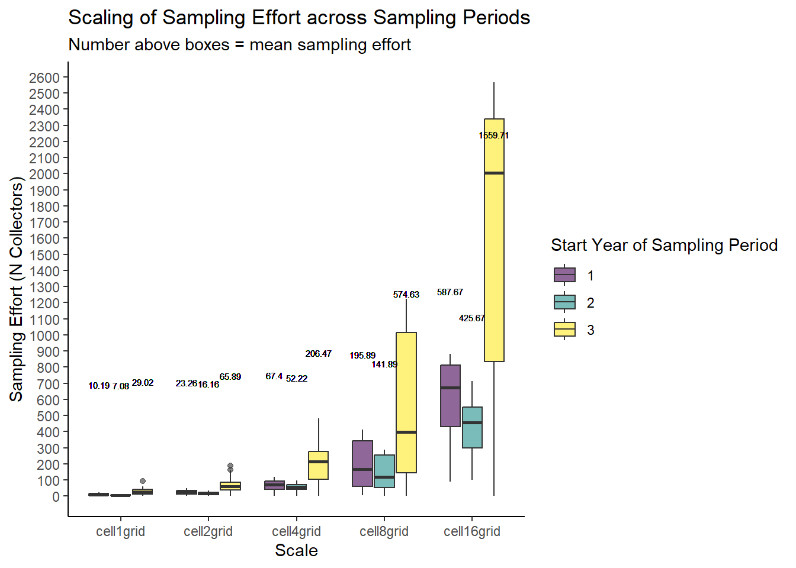
plot(ggp_telfer)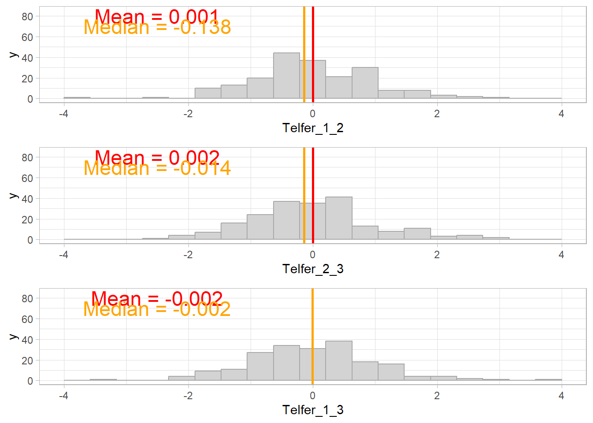
5. Occupancy calculation
There are several ways we could calculate the occupancy.
counting the number of occupied cells and calculating the proportion of all cells that were sampled
Summing the areas of all occupied cells and calculating the proportion from the whole sampled area
AOO based on IUCN standards: \(AOO = Nr.ofoccupied cells * area of single a cell\)
Modeling occupancy using occupancy-detection models
Question: Do both of these yield the same measure for fractal dimension?
Anyway, here we calculate both (1), (2) and (3). (4) Will be done at a later stage of my PhD
occ_data_list <- list()
# We run the loop for each spatial grain (N = 8)
for (i in 1:length(grid_list)){
# subset the grid_list and work on a single spatial grain:
map_atlas <- grid_list[[i]]
# Calculate total sampled area per time period:
map_atlas <- map_atlas %>% mutate(Total_area1 = sum(map_atlas$area1),
Total_area2 = sum(map_atlas$area2),
Total_area3 = sum(map_atlas$area3))
# Calculate total number of sampled cells per time period:
Total_Ncells1 <- map_atlas %>% filter(area1 > 0) %>%
mutate(Total_Ncells1 = length(unique(cell_label))) %>%
pull(Total_Ncells1) %>% unique()
Total_Ncells2 <- map_atlas %>% filter(area2 > 0) %>%
mutate(Total_Ncells2 = length(unique(cell_label))) %>%
pull(Total_Ncells2) %>% unique()
Total_Ncells3 <- map_atlas %>% filter(area3 > 0) %>%
mutate(Total_Ncells3 = length(unique(cell_label))) %>%
pull(Total_Ncells3) %>% unique()
Total_Ncells <- data.frame(cell_grouping = unique(map_atlas$cell_grouping),
Total_Ncells1, Total_Ncells2, Total_Ncells3)
map_atlas <- merge(map_atlas, Total_Ncells)
map_atlas %>% pivot_longer(cols=c('Total_Ncells1', 'Total_Ncells2', 'Total_Ncells3'),
names_to='year',
values_to='Total_N_cells')
# subset the presence/absence data to the current spatial grain:
pres_data <- presence_data %>% filter(cell_grouping == unique(map_atlas$cell_grouping))
# Merge sampled and unsampled cells for calculations:
pres_data_full <- merge(pres_data, map_atlas, by = intersect(names(pres_data), names(map_atlas)), all = T)
pres_data_full <- unique(pres_data_full)
# Reduce columns needed for analysis:
pres_data_full_reduced <- pres_data_full %>%
ungroup() %>%
mutate(
area_sampled = case_when(
tp == 1 ~ area1,
tp == 2 ~ area2,
tp == 3 ~ area3),
area_c = case_when(
tp == 1 ~ area1c,
tp == 2 ~ area2c,
tp == 3 ~ area3c),
Total_area =case_when(
tp == 1 ~ Total_area1,
tp == 2 ~ Total_area2,
tp == 3 ~ Total_area3),
Total_Ncells = case_when(
tp == 1 ~ Total_Ncells1,
tp == 2 ~ Total_Ncells2,
tp == 3 ~ Total_Ncells3)) %>%
select(verbatim_name, tp, cell_grouping, cell_label,
area_sampled, area_c, Total_area, Total_Ncells) %>%
filter_all(any_vars(!is.na(.)))
## ============================================================================================= ##
## ================================== Calculate Occupancy ===================================== ##
## ============================================================================================= ##
occ_data <- pres_data_full_reduced %>%
ungroup() %>%
# Remove unsampled cells:
filter(!is.na(verbatim_name)) %>%
# Necessary grouping to calculate occupancy:
group_by(verbatim_name, tp, cell_grouping) %>% unique() %>%
# Calculate Occupancy:
mutate(occupancy_area = sum(area_sampled)) %>%
mutate(occupancy_Ncells = length(unique(cell_label))) %>%
# Calculate AOO:
mutate(AOO = occupancy_Ncells * mean(area_sampled)) %>%
# Calculate relative Occupancy:
mutate(relative_occupancy_area = occupancy_area/Total_area) %>%
mutate(relative_occupancy_Ncells = occupancy_Ncells/Total_Ncells) %>%
# Round values to 2 digits after the comma:
mutate(relative_occupancy_area = round(relative_occupancy_area, 2)) %>%
mutate(relative_occupancy_Ncells = round(relative_occupancy_Ncells, 2)) %>%
# Remove duplicated rows:
unique()
# save to list:
occ_data_list[[i]] <- occ_data
}
# Bind to one dataframe:
occ_data_full_df <- plyr::rbind.fill(occ_data_list, fill=T)
occ_data_full_df %>% filter_all(any_vars(is.na(.))) [1] verbatim_name tp
[3] cell_grouping cell_label
[5] area_sampled area_c
[7] Total_area Total_Ncells
[9] occupancy_area occupancy_Ncells
[11] AOO relative_occupancy_area
[13] relative_occupancy_Ncells
<0 rows> (or 0-length row.names)# create scale column as a fraction of the full country:
occ_data_full_df <- occ_data_full_df %>% mutate(
scale = case_when(
cell_grouping == "cell1grid" ~ 1/32,
cell_grouping == "cell2grid" ~ 1/16,
cell_grouping == "cell4grid" ~ 1/8,
cell_grouping == "cell8grid" ~ 1/4,
cell_grouping == "cell16grid" ~ 1/2 ,
cell_grouping == "cellfullgrid" ~ 1)) %>% unique()
#save.image("~/GitHub/BEAST_General_Procedures/output/RData/Scale_Area_Curves.RData")5.2 Modeling Occupancy
6. Exploring occupancies
# Some summary stats:
occ_data_full_df %>%
group_by(cell_grouping, tp, scale) %>%
get_summary_stats(c(relative_occupancy_area, relative_occupancy_Ncells,
occupancy_Ncells, occupancy_area,
Total_area, Total_Ncells),
type="mean_sd")# A tibble: 108 × 7
tp cell_grouping scale variable n mean sd
<int> <fct> <dbl> <fct> <dbl> <dbl> <dbl>
1 1 cell1grid 0.0312 relative_occupancy_area 65400 0.787 2.43e-1
2 1 cell1grid 0.0312 relative_occupancy_Ncells 65400 0.787 2.43e-1
3 1 cell1grid 0.0312 occupancy_Ncells 65400 494. 1.52e+2
4 1 cell1grid 0.0312 occupancy_area 65400 66024. 2.03e+4
5 1 cell1grid 0.0312 Total_area 65400 83900. 0
6 1 cell1grid 0.0312 Total_Ncells 65400 628 0
7 2 cell1grid 0.0312 relative_occupancy_area 68632 0.8 2.44e-1
8 2 cell1grid 0.0312 relative_occupancy_Ncells 68632 0.8 2.44e-1
9 2 cell1grid 0.0312 occupancy_Ncells 68632 502. 1.53e+2
10 2 cell1grid 0.0312 occupancy_area 68632 67133. 2.04e+4
# ℹ 98 more rows# Example species:
occ_data_full_df %>% filter(verbatim_name == "Grus grus") %>% unique() %>%
ggplot(aes(x = log(scale), y = log(AOO), color = factor(tp)))+
geom_point()+
theme_light()+
geom_line()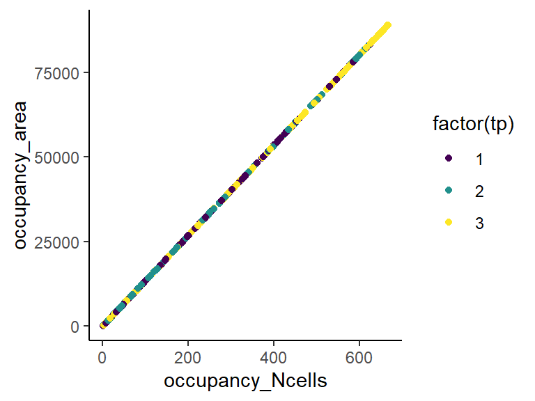
td<- presence_data_sf %>% filter(verbatim_name == "Grus grus")
ggplot()+
geom_sf(data = td)+
geom_sf(data = grid_list[[1]], fill = 'white') +
theme_light()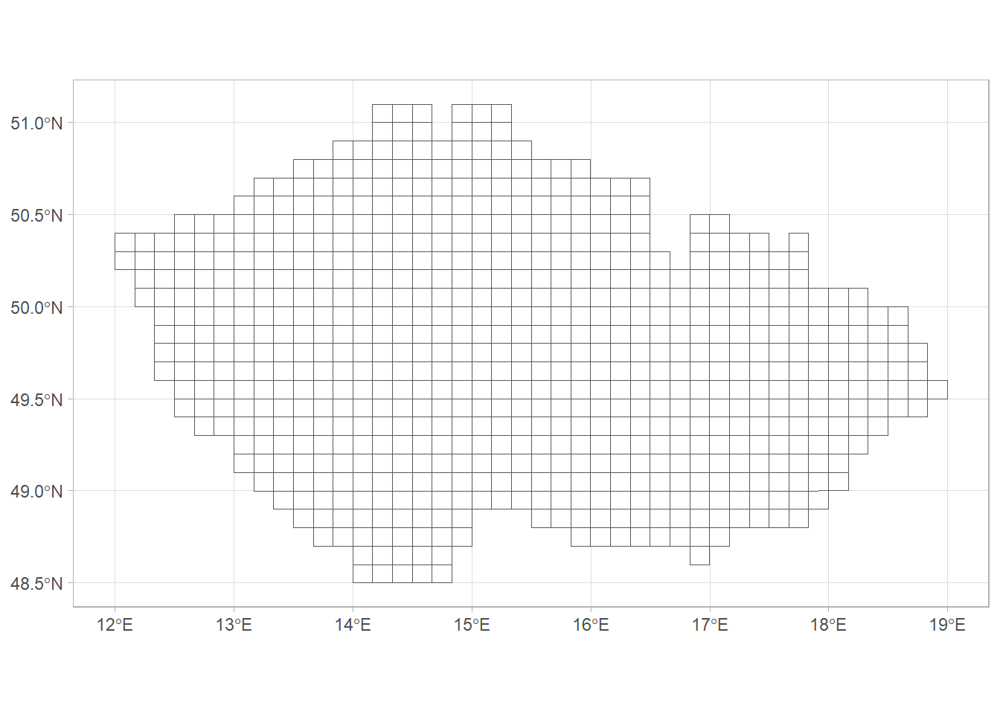
cols_n <- intersect(names(presence_data), names(occ_data_full_df))
occ_data_full <- unique(merge(presence_data, occ_data_full_df, by = cols_n, all.y = T))
gc() used (Mb) gc trigger (Mb) max used (Mb)
Ncells 5171315 276.2 20848256 1113.5 20503828 1095.1
Vcells 53243585 406.3 117867876 899.3 117849728 899.2# Which species have high occupancy at the smallest grid size?
high_occu <- occ_data_full_df %>% filter(cell_grouping == "cell1grid") %>%select(verbatim_name, relative_occupancy_area) %>% filter(relative_occupancy_area > 0.99) %>% unique()
low_occu <- occ_data_full_df %>% filter(cell_grouping == "cell1grid") %>%select(verbatim_name, relative_occupancy_area) %>% filter(relative_occupancy_area < 0.15) %>% unique()
occ_data_full_df %>% filter(cell_grouping == "cell1grid") %>%
ggplot() +
geom_boxplot(aes(y = relative_occupancy_area, col = tp))Warning: The following aesthetics were dropped during statistical transformation: colour
ℹ This can happen when ggplot fails to infer the correct grouping structure in
the data.
ℹ Did you forget to specify a `group` aesthetic or to convert a numerical
variable into a factor?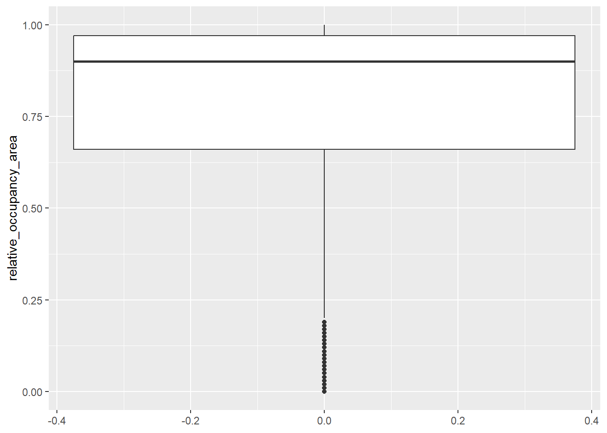
6.1 Scale-Area-Curves
load("~/GitHub/BEAST_General_Procedures/output/RData/Scale_Area_Curves.RData")
dd <- occ_data_full_df %>% select(verbatim_name, tp, cell_grouping, Total_area, Total_Ncells, occupancy_area, occupancy_Ncells, relative_occupancy_area, relative_occupancy_Ncells, scale) %>% unique()
taxa <- unique(dd$verbatim_name)
p_list <- list()
for (i in 1:length(unique(dd$verbatim_name))){
p_list[[i]] <- dd %>% filter(verbatim_name == taxa[i]) %>%
ggplot(aes(y=log(relative_occupancy_Ncells), x = log(scale))) +
geom_point()+
geom_line(aes(group = verbatim_name))+
facet_wrap(tp~.)+
theme_classic()
}
par(mfrow=c(1,4))
p_list[1:3][[1]]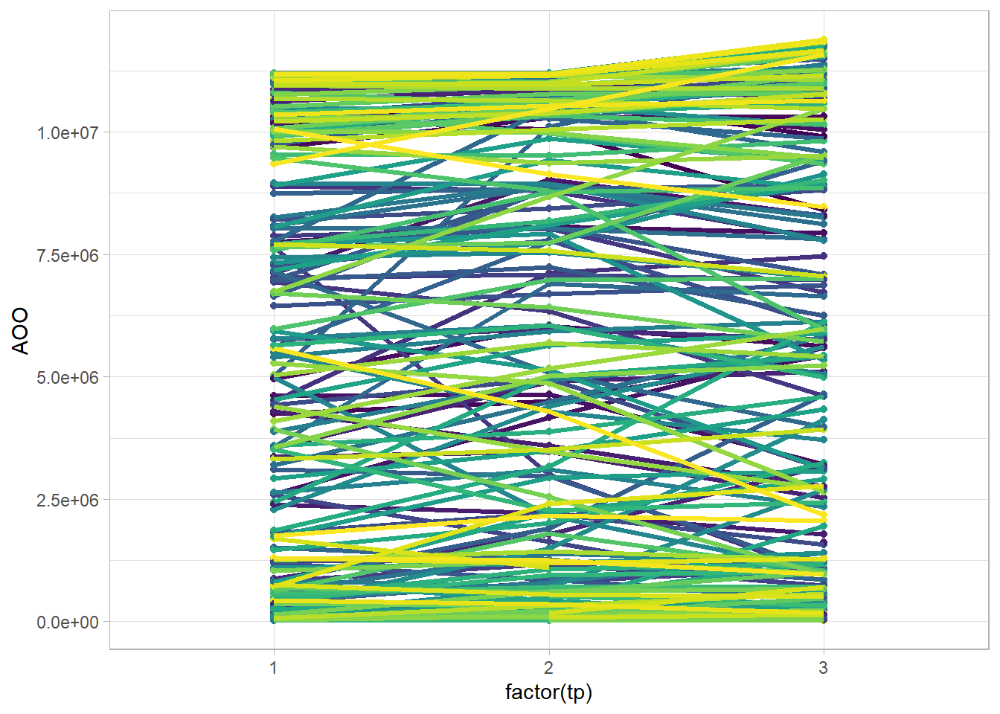
[[2]]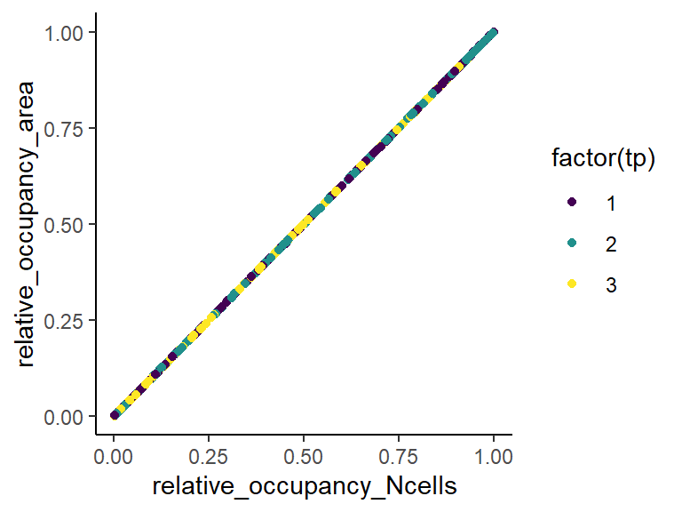
[[3]]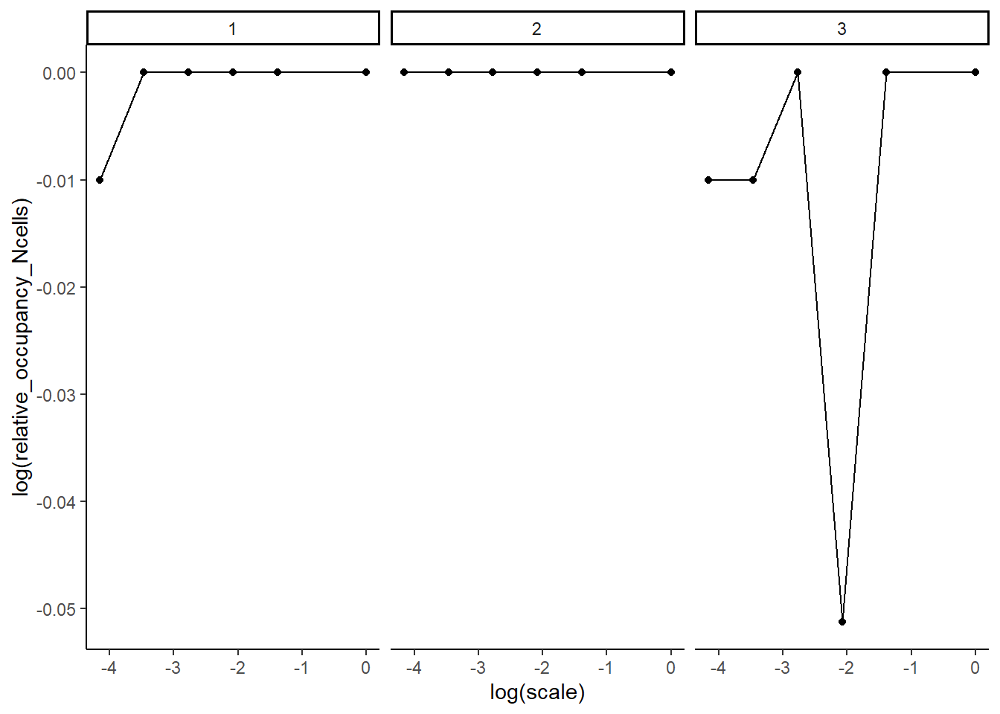
dd %>%
ggplot(aes(y=log(relative_occupancy_Ncells), x = log(scale), color = verbatim_name)) +
geom_point(show.legend = F)+
geom_line(aes(group = verbatim_name), show.legend = F)+
facet_wrap(tp~.)+
theme(legend.position = "none") +
theme_light() 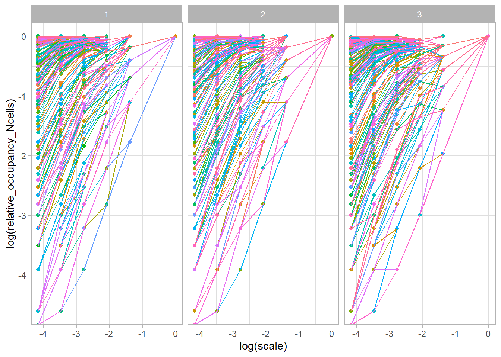
dd %>% filter(cell_grouping == "cell1grid") %>%
ggplot(aes(x = occupancy_Ncells)) +
geom_histogram(bins = 20, bg = "lightgrey", col = "darkgrey")+
facet_wrap(tp~.)+
theme_light()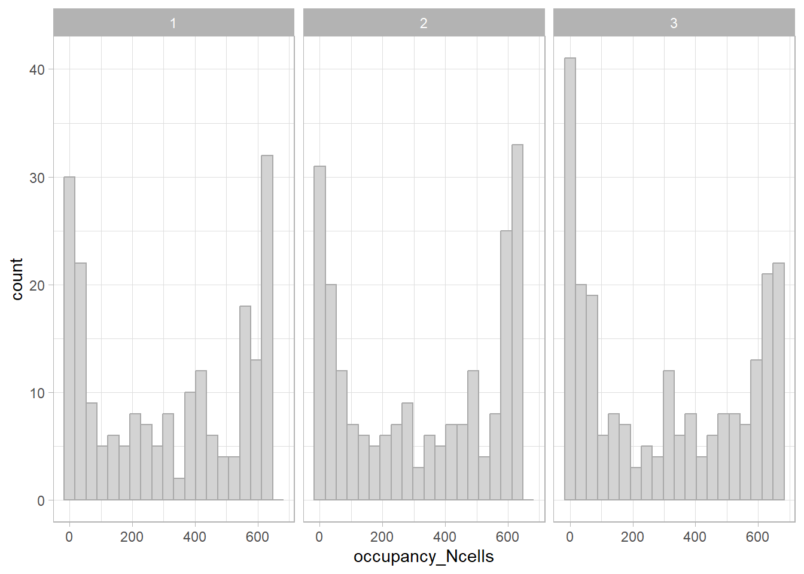
How fractal is the data?
The straighter the line, the more fractal it is.
The following analyses all depend on the assumption that species distributions are fractal.
Background:
The following method (function) measures the deviation of the line from a perfectly straight line (i.e., perfectly fractal).
One common approach is to calculate the R-squared value for a linear regression of the points on the line. A perfectly straight line will have an R-squared value of 1, while a more curved line will have a lower R-squared value.